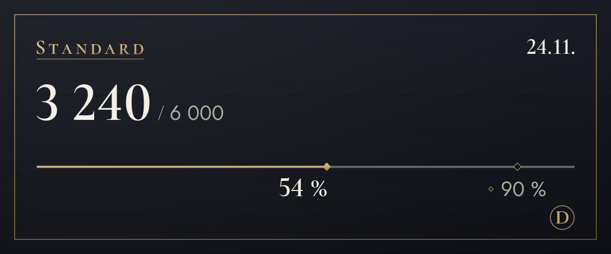

Tilaukset ja hinnat
Aloita ilmaiseksi ja vaihda tilausta, kun tarvitset enemmän.
Palvelu on kokeiluvaiheessa, joten emme ota vielä maksuja vastaan. Kun maksaminen avautuu, tilaat ja peruutat tällä sivulla. Kokeiluvaiheen aikana kääntäminen ei pysähdy, vaikka raja ylittyisi.
Free
0 $
Kokeile ensin (alkuperäisen viestin katsominen ei kuluta käännöksiä)
100 käännöstä kuukaudessa (noin 3 päivässä), 4 sävyä ensimmäiset 14 päivää
Samasta rajasta kuluu myös kuvien tekstin kääntäminen (kuvaa kohden yleensä 4) ja käännös kuvan päälle (yleensä 6)
Näin aloitatLite
4,99 $/kk
Valitse sävy jokaiselle palvelimelle: kavereille rennosti, uusissa paikoissa kohteliaasti
1 200 käännöstä kuukaudessa (noin 40 päivässä), 4 sävyä, 20 lisää päivässä, kun raja täyttyy
Samasta rajasta kuluu myös kuvien tekstin kääntäminen (kuvaa kohden yleensä 4) ja käännös kuvan päälle (yleensä 6)
Valitse (Lite)Standard
Suositeltu
9,99 $/kk
Reilusti päivittäiseen jutteluun
6 000 käännöstä kuukaudessa (noin 200 päivässä), 4 sävyä, 20 lisää päivässä, kun raja täyttyy
Samasta rajasta kuluu myös kuvien tekstin kääntäminen (kuvaa kohden yleensä 4) ja käännös kuvan päälle (yleensä 6)
Valitse (Standard)Plus
14,99 $/kk
Eniten tilaa paljon kääntäville
20 000 käännöstä kuukaudessa (noin 667 päivässä), 4 sävyä, 20 lisää päivässä, kun raja täyttyy
Samasta rajasta kuluu myös kuvien tekstin kääntäminen (kuvaa kohden yleensä 4) ja käännös kuvan päälle (yleensä 6)
Valitse (Plus)
- Hinnat ovat Yhdysvaltain dollareissa. Maasi verot lisätään kassalla.
- Maksulliset tilaukset ovat kuukausitilauksia, jotka uusiutuvat automaattisesti. Voit peruuttaa milloin tahansa, eikä seuraavaa maksua silloin veloiteta.
- Free-tilaus ei koskaan muutu itsestään maksulliseksi.
- Peruuttamisoikeutesi on rajoitettu jo käyttämäsi osan osalta, ja voit kokeilla ensin Free-tilausta.
- Käännökset tekee AI (Anthropicin Claude). Se voi erehtyä, joten tarkista tärkeissä asioissa myös alkuperäinen viesti.
- Lisätietoja: Käyttöehdot ja Palautusehdot.
Näin käännökset lasketaan
Tilausten rajat lasketaan käännöksinä. Yksi viesti käännettynä yhdelle kielelle on 1 käännös.
- Teksti
- Viestiä kohden 1Pitkästä viestistä lasketaan 1 lisää jokaista 200 korean-, kiinan- tai japaninkielistä merkkiä kohden tai jokaista 500 muunkielistä merkkiä kohden. Viestejä, joissa ei ole mitään käännettävää, ei lasketa.
- Kakkospainike
- Viestiä kohden 1Sama kuin tekstillä. Alkuperäisen viestin tai toisen kielen katsomista ei lasketa.
- Kuvien teksti
- Kuvaa kohden yleensä 43 kuvan lukemisesta ja lisäksi luetun tekstin käännös. Tekstittömiä kuvia ei lasketa, ja yhdestä viestistä luetaan enintään 4 kuvaa.
- Käännös kuvan päälle
- 6 yhdestä tekstilohkosta3 lukemisesta, 1 käännöksestä ja 2 piirtämisestä. Jokainen lisälohko lisää käännöksestään vähintään 1, ja jokaiset 16 lohkoa lasketaan yhdeksi kuvaksi. Jos lohkoja on yli 16, näet hinnan ensin, ja käännös tehdään, kun vahvistat (enintään 128 lohkoa). Fontin vaihtamista ei lasketa.
- Ääniviestit Tulossa
- Äänisekuntia kohden 1Puhelinsovelluksesta lähetettyjen ääniviestien litterointia ja kääntämistä valmistellaan. Kun se avautuu, siihen lisätään sanotun käännös, eikä viestejä, joissa ei puhuta, lasketa.
- Päiväkatto
- 200 kuvaaMäärä lasketaan henkilöittäin ja on sama kaikissa tilauksissa, jotta automatisoitu massakäyttö ei voi pysäyttää kaikkien muiden käännöksiä.
- Kuka maksaa
- Kuvien kuvakkeista tai kakkospainikkeella avatut käännökset lasketaan painajalle, ei viestin lähettäjälle.
Esimerkiksi
200 käännöstä päivässä
Standard-tilauksen päiväosuus
Riittää muutaman kuvan kääntämiseen ja koko illan jutteluun.
40 käännöstä päivässä
Lite-tilauksen päiväosuus
Riittää tunnin jutteluun kavereiden kanssa.

/käännä käyttö.Usein kysyttyä
Milloin maksaminen avautuu?
Palvelu on kokeiluvaiheessa, joten emme ota maksuja vastaan, ja kaikki käyttävät Free-tilausta. Maksaminen avautuu, kun yrityksen rekisteröinti ja maksunvälittäjä ovat valmiina, ja kerromme päivän tukipalvelimen uutisissa ja tällä sivulla. Koreassa maksetaan woneissa, muualla Yhdysvaltain dollareissa.
Miten peruutan tilauksen?
Kun maksaminen on avautunut, peruutat tilauksen tämän verkkosivuston tilaussivulla, samassa paikassa, jossa tilaat. Peruutus pysäyttää seuraavan maksun, ja tilauksesi pysyy voimassa maksetun jakson loppuun. Myös botin asetuspaneelin tilauksen hallintanäkymä tuo sinut tänne.
Miten maksujen palautus toimii?
Voit saada ensimmäisen maksusi kokonaan takaisin 7 päivän kuluessa. Palautamme maksun myös palvelukatkosten vuoksi tai jos palvelu poikkeaa siitä, mitä tällä sivulla kerrotaan. Loput ehdot löytyvät täältä: Palautusehdot.
Tallennetaanko kuvia?
Botti ei tallenna niitä. Kuvat lähetetään Anthropicille tekstin lukemista varten, ja sinulle näytetään vain tulos. Mitään ei lähetetä ennen kuin painat painiketta. Luettua tekstiä ei myöskään tallenneta; vain käännökseen sovelletaan käännösvälimuistin sääntöä (30 päivää). Jotta fontin vaihto voidaan piirtää heti, kuva, jolle painoit ”Lisää kuvaan”, säilyy muistissa 15 minuuttia yhdessä luetun tekstin ja sen käännöksen kanssa.
Kuka käännökset tekee?
Käännökset tekee AI (Anthropicin Claude). Sama AI lukee kuvien tekstit. Käännökset voivat olla virheellisiä, joten tarkista tärkeissä asioissa myös alkuperäinen viesti. Kuvissa, joihin on piirretty käännös, on merkintä AI-käännös niiden kuvauksessa (alt-tekstissä) ja tuloksen alla olevassa ilmoituksessa.